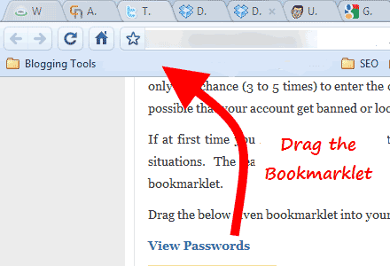

![]()
前一段日子，我写了两个Bookmarklet----"短网址生成"和"短网址还原"。
它们用起来很方便，除了我本人之外，其他朋友也在用。第一次发布Bookmarklet，就能有用户，我挺满意的。
下面就是我整理的《Bookmarklet编写指南》，供自己和需要的朋友参考。
====================================================
Bookmarklet编写指南
阮一峰 编写
一、什么是Bookmarklet？
Bookmarklet是一个复合词，由Bookmark（书签）和-let（小的）构成，中文可以译成"书签工具"。
它在形式上与"书签"一样，都保存在浏览器收藏夹里。但是，它不是一个以"http://"开头的网址，而是一段Javascript代码，以"javascript:"开头。点击之后，会对当前页面执行某种操作。
它通常在网页中以链接的形式出现，就像下面这样：
<a href="javascript:alert('hi');">xxx</a>
用户直接把这个链接拖到地址栏或收藏夹就可以用了。

二、Bookmarklet的优点
它有几个很显著的优点，其他技术难以取代：
1. 安装快速
Bookmarklet的安装，就是在收藏夹中保存一段代码，一步就能完成。所有浏览器都原生支持。
2. 使用方便
用的时候，点一下这个链接就行了。
3. 开发容易
一段Javascript代码就是Bookmarklet的所有内容，不需要用到其他技术，比开发一个浏览器插件简单多了。
4. 跨浏览器
所有浏览器都支持Bookmarklet。如果写的正确，同样一个Bookmarklet在各种浏览器上都能正常使用。
三、Bookmarklet的编写规则
1. 必须以"javascript:"开头
浏览器把"javascript:"当做协议看待。有了它，浏览器才知道要用javascript解释后面的代码。它的作用等同于将代码放在<script></script>之间运行。
2. 所有代码必须在同一行
因为浏览器把Bookmarklet当做网址保存，而网址是不能分行的，所以Bookmarklet也不能分行。
另一方面，网址是有长度限制的。IE的最长网址不能超过2083个字符（IE6不能超过508个字符），这也就是Bookmarklet的最长长度。压缩工具可以帮忙减少长度，但是使用下面提到的连接外部代码的方法，可以避开这个限制。
3. 使用单引号
根据Javascript的语法，单引号（'xxx'）和双引号（"xxx"）都能使用。但是由于html语言主要使用双引号，所以Bookmarklet优先使用单引号。万一遇到必须使用双引号的情况，就采用它的URL编码形式"%22"。
4. 不要污染全局变量
Bookmarklet最好不要生成新的全局变量，可以采用直接运行匿名函数的方式：
javascript: (function(){...})();
上面式子的第一个括号，定义了一个匿名函数；最后一个括号表示立即执行这个匿名函数。所有的变量都是匿名函数的内部变量，不会生成任何新的全局变量。
如果必须设置全局变量，就取罕见的变量名（比如hd8ki2），防止与已经存在的全局变量同名。
5. 对文本和URL进行编码
为了防止出现非法字符，代码以外的文本都应该使用encodeURIComponent()函数进行编码，比如把空格变成%20。
四、Bookmarklet的编写技巧
1. 获取网页信息
获取当前页面的标题：document.title。
获取当前页面的URL： location.href。
获取当前选中的文本：
var t;
t = (function(){
if (window.getSelection){
return window.getSelection().toString();
}else if(document.getSelection){
return document.getSelection();
}else if (document.selection){
return document.selection.createRange().text;
}
return '';
})();
2. 防止刷新页面
如果代码对页面有改动（比如使用了document.write），浏览器就会用一个新页面替换原有页面。所以最好用void()命令，把语句放在里面。
举例来说，下面这个Bookmarklet会导致原页面被一个新页面替代：
javascript:document.links[0].href='http://www.ibm.com/';
加上void以后，页面就不会跳转了：
javascript:void(document.links[0].href='http://www.ibm.com/');
3. 框架（frameset）
对于使用"框架"（frameset）的网页，那些需要操作页面的Bookmarklet一般不起作用。所以，如果发现网页使用了框架，就告诉用户Bookmarklet无法使用。
if(frames.length > 0)
alert('对不起，不适用于框架。');
else{
/* 正常情况的代码 */
}
但是，上面的代码有一个问题，那就是行内框架iframe也包含在frames.length之中，所以必须排除iframe的影响。
if(frames.length >
document.getElementsByTagName('iframe').length)alert('对不起，不适用于框架。');
else{
/* 正常情况的代码 */
}
4. 连接外部javascript代码
有时，Bookmarklet必须再引入外部的Javascript代码，这就需要为当前页面添加一个script标签。
javascript:(function(){
var script=document.createElement('script');
script.setAttribute('src',
'http://path/to/external/file.js');document.getElementsByTagName('head')[0]
.appendChild(script);})();
5. 添加外部函数库
如果Bookmarklet需要用到外部函数库，就必须把它也加进来。但是，前提是必须先检查一下，看看原页面是否已经加载了这个函数库。
下面以加载jQuery为例：
if (!window.jQuery) {
script=document.createElement( 'script' );
script.src='http://ajax.googleapis.com/
ajax/libs/jquery/1/jquery.min.js';script.onload=foo;
document.body.appendChild(script);
} else {
foo();}
function foo() {/* ... */
}
五、延伸阅读
* Kalid Azad, How To Make a Bookmarklet For Your Web Application
* Troels Jakobsen, Rules for Bookmarklets
* Troels Jakobsen, Tips for Writing Bookmarklets
* Siddharth, Create Bookmarklets - The Right Way
* 2ality, Implementing bookmarklets in JavaScript
（完）
![]() 《如何变得有思想》
《如何变得有思想》 twitter
twitter![]() weibo
weibo


sokoban 说：
大多数浏览器接受的最长网址，都在2000个字符左右，只有IE6是488字符或508字符。
不赞成这个，好像除了IE，所有其他浏览器都支持至少8000个以上字符的URL，我是做过试验的。有的版本Apache服务器默认也只是支持8000长度的URL。
2011年6月11日 01:24 | # | 引用
sokoban 说：
给出一个链接 http://www.boutell.com/newfaq/misc/urllength.html
2000字符只是IE的限制。
2011年6月11日 01:39 | # | 引用
牛二弟弟 说：
昨天就在折腾如何在textarea中选中位置插入内容的js脚本。
最后的做法是：
为textarea绑定一个focus事件；当想要往textarea插入内容时，
让textarea获得焦点；textarea获得焦点后执行我定义的事件，然后就可以在
textarea中光标处插入内容了。
这里面多了一个过渡： 先让textarea获得焦点，然后在里面计算它的位置，增加新内容。
（说的是大概，实际上ie和其他浏览器有不同的解释行为）
要是昨天就来看阮先生的blog，我就少了些折腾。
2011年6月11日 09:33 | # | 引用
牛二弟弟 说：
去年的时候，我就搞了个这样的东西：天涯帖子脱水。
专门针对天涯，只看楼主。可惜东西搞了出来后，
因为担心bookmarklet到底有多少人会真的用。
就放弃了。（我自己很反感不断点击书签）
当然，我的担心本身也是由于这个功能的特殊性。
它必须每次加载页面后都要点击一下，才能处理。
这两天又搞了个雏形出来，换了个形式。采用了google
chrome的扩展。
这样子话，就能在页面跳转时，不用用户点，就能自动记忆，
自动处理了。
2011年6月11日 09:40 | # | 引用
hyh 说：
以前就知道你的blog，最近重新阅读了不少。
能否提个小建议：即翻译的文章，在旁边加个浮动的按钮，可以在中英对照和只看中文／只看英文之间切换。技术上应该很简单才对。
间断的阅读体验让我感觉很奇怪。
2011年6月11日 11:41 | # | 引用
依云 说：
GreaseMonkey 脚本比较适合。
2011年6月11日 11:54 | # | 引用
阮一峰 说：
所有页面有统一模板，实现中英文切换，技术上可能比较麻烦。
我是每一段对着英文翻译中文的，所以才会是现在这种格式。
2011年6月11日 12:13 | # | 引用
阮一峰 说：
谢谢指出，已经修改原文了。确实只有IE规定URL最长2000个字符左右。
2011年6月11日 12:42 | # | 引用
RedNax 说：
纠正个小错误
"2. 防止刷新页面"
document.write 会替换掉原来的页面是这个函数本来的作用，不是因为这个函数会修改页面（对页面进行修改不会使浏览器擦掉旧页面）。浏览器用新页面替换原有页面仅当那段javascript的返回值不是undefined的时候才会发生，页面将会被替换为那段javascript运行的返回值。
void()唯一作用是抛弃里面的返回值，返回undefined。如果用匿名函数的形式(function(){...})();一般不会放返回值，就没必要用void()了。另外直接在脚本最后加一个undefined; 也有同样的作用。
"3. 使用单引号/5. 对文本和URL进行编码"
现在的主流浏览器（包括IE8）对于URL里的符号和编码基本没有限制了，随便怎么用都可以。
另外关于代码的长度，IE有较大的限制，但Chrome, Safari和FF几乎是无限的，我试过超过20K长度的bookmarklet.
其实Bookmarklet在桌面浏览器用处不大，毕竟有UserScript和插件可以用。不过在移动浏览器（iPad的Safari、Android的浏览器）上不失为一个不错的增强/修改特定页面的好工具。
我就做了一个iPad看在线漫画的小工具：
http://yujianrong.bitbucket.org/JsTool/iPadMangaReader/index.html
2011年6月11日 15:26 | # | 引用
hyh 说：
如果“天涯帖子脱水”能和Safari的“阅读器”（fx有类似插件）结合起来就好了，翻页也免了。
2011年6月11日 22:41 | # | 引用
南拳 说：
一直很欣赏阮先生的解构技术的能力。憧憬着android、ios平台的入门开发博文。 不知道阮先生是否有计划做系列的不同平台或语言的开发指南短篇。 或者征稿，让更多人能够通过这个平台参与进来？ 谢谢
2011年6月13日 14:59 | # | 引用
k 说：
翻译的文章在相应位置给出原文或链接即可
2011年6月13日 17:47 | # | 引用
呵呵 说：
个人感觉类似功能用浏览器插件来做更为合适
只是略显折腾了一些
2011年6月14日 15:11 | # | 引用
netwjx 说：
void哪个 我以前的做法是结尾加一句undefined 就不会导致页面转向了
因为比void使用的字符多 现在基本使用void 0
如
href="javascript:alert('');void 0"
0的占位是必须的,但不是必须是0(挺绕的),这样不用计算个很大的括号
2011年6月14日 15:48 | # | 引用
remember2015 说：
IE6,7准确的说是2083个字吧，另外IE6也是2083，IE8略有不同长一些
2011年6月20日 15:57 | # | 引用
Yuan Yuan 说：
我没看懂 Bookmarklet 是做什么的，请问能举个例子描述么？谢谢
2011年6月23日 14:23 | # | 引用
Shellexy 说：
bookmarklet 其实分行写没问题
另外有些 webkit 浏览器不允许脚本修改 head 内容，所以document.getElementsByTagName('head')[0].appendChild(script);
要改为
document.body.appendChild(script);
2011年7月12日 23:58 | # | 引用
行之 说：
以后可以写个chrome扩展应用的教程：）
2011年11月10日 19:30 | # | 引用
matthew 说：
阮哥如此强大.学习了.
2012年4月22日 21:35 | # | 引用
jaxer 说：
一直想在kindle的浏览器里添加bookmarklet。
2012年7月13日 11:22 | # | 引用
ericyi 说：
博主：bookmarklet 能访问 https website 吗,我在开发一个bookmarklet,但是在HTTPS站点下不能用，HTTP站点是可以的，
2012年9月 4日 21:56 | # | 引用
test_32 说：
您这方法太麻烦了……
看看我的实现 —— http://fyscu.com/forum.php?mod=viewthread&tid=3677&page=1#pid57685
2013年10月24日 03:25 | # | 引用
test_32 说：
用“递归 + try/catch”方法 可以遍历网页框架（页面中所有的 frame/iframe） ——
http://fyscu.com/forum.php?mod=viewthread&tid=3677&page=1#pid57685
2013年10月24日 03:27 | # | 引用
liqiang 说：
用动态映射可以记录各种属性 ，然后其它的有默认值处理兼容性
2015年8月 6日 09:53 | # | 引用